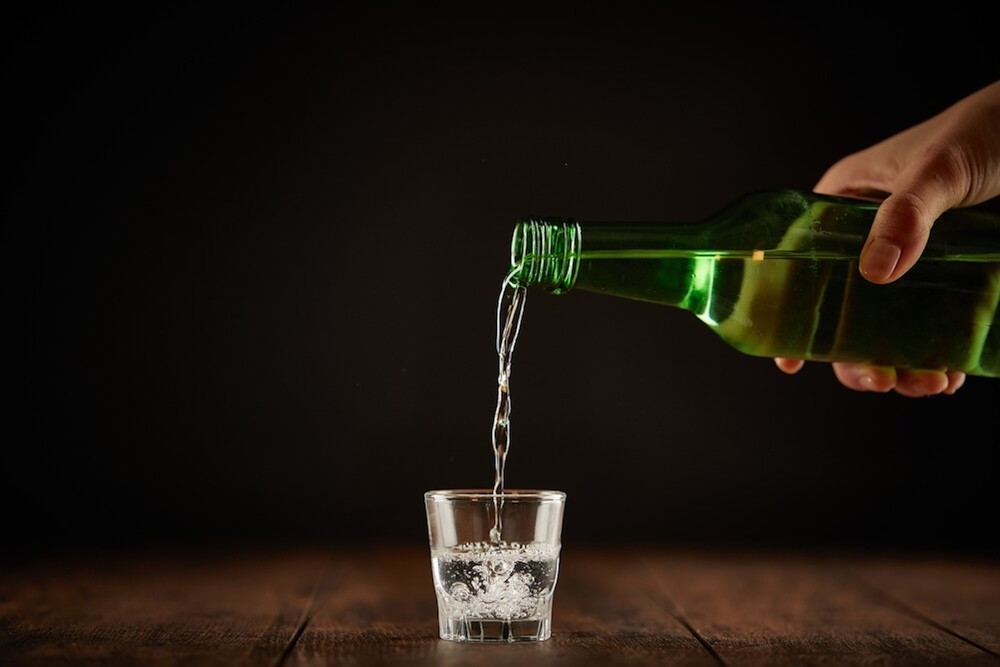

혈중알코올농도
0.03%
의 정체

뉴스에서 보이는
"혈중알코올농도"
는 대체 뭘까?
혈중알코올농도
란 말그대로 혈액속에 있는 알코올의 비율입니다.
0.03% = 혈액 100ml당 알코올 3g
(혈액 100ml당 존재하는 알코올의 양을 나타낸 수치다.)
퍼센트에 따른 몸에 미치는 영향
0.03%
들뜨고 기분 좋은 상태, 말이 많아지는 등의 변화
0.05%
신체 활동 능력과 판단력이 뚜렷하게 줄어듦
0.08%
언어기능 저하, 자신감 상승
형벌 강화에도 불구하고, 한국의
재범률
은 여전히 타국보다 높게 나타난다.
그 이유가 뭘까?
운전대를 잡기 전, 다시 한 번 생각하세요.